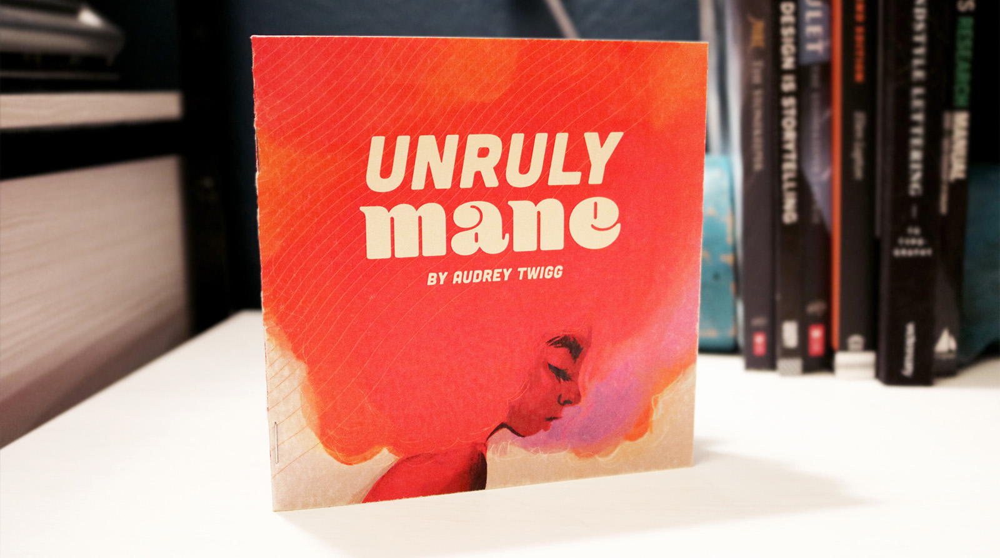

Editorial design


PROJECT
UNRULY MANE
DESCRIPTION
Unruly Mane is my zine that focuses on freedom of hair expression and empowerment. It contains anecdotal stories of my personal experience with being a mixed-race female and my rocky relationship with my hair. Inside, there are over 15 of my illustrations and short stories. There are several screen-printed artworks that accompany the zine that features an original character who is on the cover of the zine.
This work has been featured in the gallery show called Revealing at the Center for Visual Art in Denver, CO.
SKILLS
Editorial design
Print production
Illustration
Screen-printing
Direction + content
UNRULY MANE WITH SCREENPRINTS IN REVEALING
CENTER FOR VISUAL ART, DENVER, CO
CONTACT ME
LET'S MAKE MAGIC
studiotwiggly@gmail.com
Denver, Colorado, USA